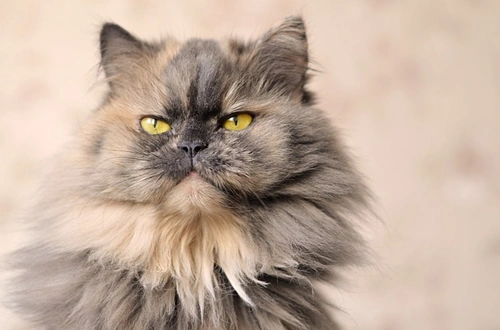
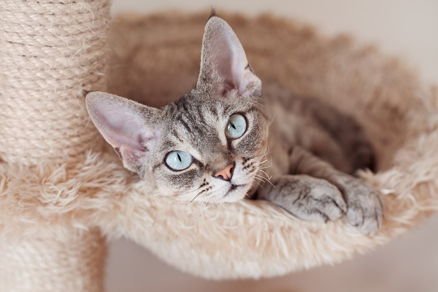
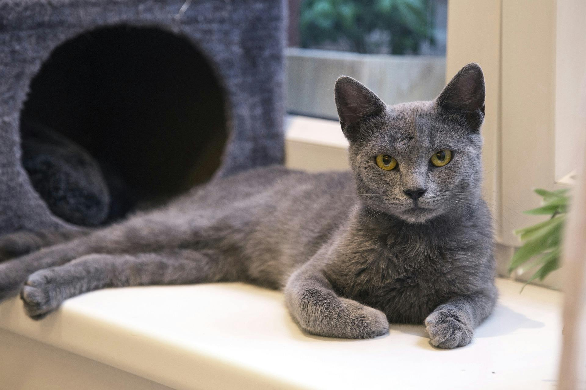
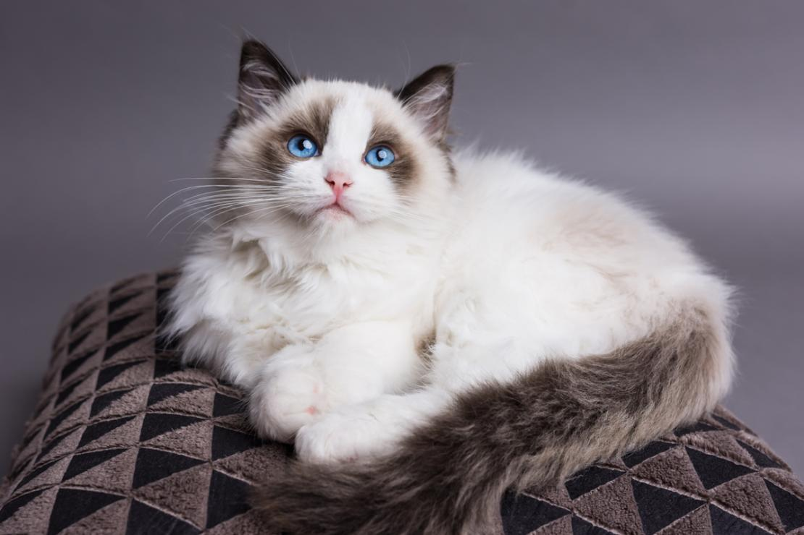

Popular Cat Breeds
Learn about some of the most popular cat breeds and their unique traits.
Persian

Appearance: Long fur, round face, and a flat nose.
- Lifespan: 12-17 years
- Origin: Iran (Persia)
- Personality: Calm, affectionate, and quiet
- Fun Fact: Persian cats require regular grooming due to their long coats.
Siamese

Appearance: Sleek body, blue almond-shaped eyes, and large ears.
- Lifespan: 15-20 years
- Origin: Thailand (formerly Siam)
- Personality: Vocal, affectionate, and social
- Fun Fact: Siamese cats are one of the most talkative cat breeds.
Maine Coon

Appearance: Large body, long fluffy tail, and tufted ears.
- Lifespan: 12-15 years
- Origin: United States
- Personality: Friendly, playful, and great with families
- Fun Fact: Maine Coons are one of the largest domestic cat breeds.
Bengal

Appearance: Sleek, muscular body with a wild appearance and spotted coat.
- Lifespan: 12-16 years
- Origin: United States
- Personality: Active, intelligent, and curious
- Fun Fact: Bengals are bred from a cross between domestic cats and Asian leopard cats.
Devon Rex

Appearance: Short curly fur, large eyes, and big ears.
- Lifespan: 9-15 years
- Origin: England
- Personality: Mischievous, playful, and loving
- Fun Fact: Devon Rex cats are known for their hypoallergenic coat.
Russian Blue

Appearance: Short, dense blue-gray coat with green eyes.
- Lifespan: 15-20 years
- Origin: Russia
- Personality: Quiet, reserved, and loyal
- Fun Fact: Russian Blue cats are believed to bring good luck in Russia.
Ragdoll

Appearance: Blue eyes, semi-long fur, and a large body.
- Lifespan: 12-17 years
- Origin: United States
- Personality: Affectionate, calm, and relaxed
- Fun Fact: Ragdolls go limp when picked up, hence the name.
Sphynx

Appearance: Hairless with wrinkled skin and large ears.
- Lifespan: 8-14 years
- Origin: Canada
- Personality: Playful, friendly, and affectionate
- Fun Fact: Despite being hairless, Sphynx cats need regular bathing to remove skin oils.